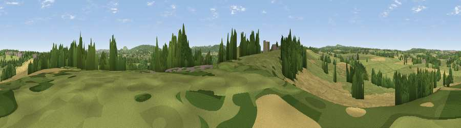

Viewpoint near West Woodlands
#38067 in England · top 79% of its area beats it · near West WoodlandsWhere it is
The exact computed spot (ST 76275 45925). Click the marker for map links.
The view, rendered

A 360° render of this exact spot computed from the terrain model, tree cover and land cover — summer colours, afternoon light, calibrated against photographs of famous viewpoints. Real trees, hedges and buildings will differ in detail.
The panorama
Grey silhouette: terrain skyline in each direction (720 bearings, Earth curvature and refraction included). Dashed green: skyline with trees (+15 m) and buildings (+8 m) as obstacles. Blue strip: how far the ground is visible on each bearing.
Where the view opens
Wedge length = distance to the farthest visible ground on that bearing (vegetation-aware). Rings at 10, 25 and 50 km.
What fills the view
49% grassland · 32% cropland · 16% woodland · 3% built-up
Angular shares of the visible panorama (visual magnitude), not map area. Landscape diversity 0.48 (0–1 Shannon).
Key numbers
More beautiful places nearby
The staircase of upgrades: each row has a higher view potential than everything closer. Driving times are estimates from straight-line distance, calibrated against real road routing — check an actual route before setting out.
| Place | Direction | Drive | Score |
|---|---|---|---|
| Viewpoint near Trudoxhill | SW · 0 km | ~1 min | 30.1 |
| Viewpoint near Trudoxhill | SW · 1 km | ~3 min | 38.0 |
| Viewpoint near Mells | NW · 4 km | ~9 min | 49.1 |
| Postlebury Hill | SW · 4 km | ~9 min | 62.7 |
| Viewpoint near Kilmington | S · 7 km | ~15 min | 63.1 |
| Viewpoint near East Cranmore | WSW · 7 km | ~15 min | 69.2 |
| Cley Hill | E · 8 km | ~16 min | 76.8 |
| Viewpoint near Lamyatt | SW · 14 km | ~25 min | 77.8 |
51.21203, -2.34103 · source: screening · position refined by local search. Computed location — check access rights before visiting.